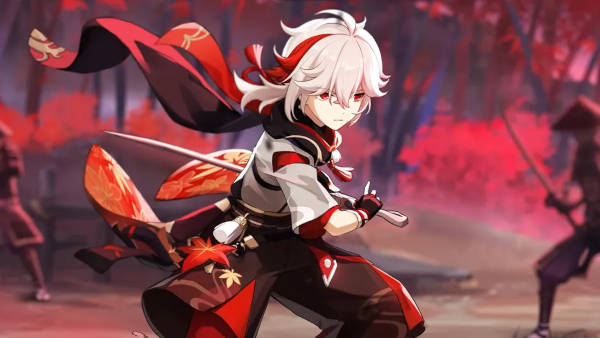

Origem e Declínio do Clã Kaedehara
Herança da Forja: O clã descendia de mestres ferreiros famosos pelas artes de forja (como a arte Shin), mas a fortuna da família ruiu antes de Kazuha herdar o título
Liberdade: Ao ver o fim da riqueza da família e a dissolução dos empregados, Kazuha não sentiu tristeza, mas alívio por poder viver livremente vagando pela natureza.
A Morte do Amigo e a Fuga
O Decreto de Caça às Visões: Durante o governo da Shogun Raiden em Inazuma, as Visões foram confiscadas.
O Duelo diante do Trono: Um amigo íntimo de Kazuha desafiou Kujou Sara para um duelo de honra perante o trono e acabou executado.
A Fuga: Kazuha invadiu o palácio Tenshukaku, pegou a Visão Electro (que perdeu o brilho) de seu amigo e fugiu de Inazuma, tornando-se um criminoso procurado.
A Frota Crux e a Guerra em Inazuma
Acolhimento: Kazuha encontrou refúgio em Liyue, onde foi acolhido por Beidou na Frota Crux.
O Momento Heroico: Durante a batalha final da resistência contra o Shogunato em Inazuma, Kazuha temporariamente despertou a Visão Electro de seu amigo falecido ao lado de sua própria Visão Anemo. Isso permitiu que ele bloqueasse o golpe mortal (Musou no Hitotachi) da Shogun Raiden para salvar o Viajante.
Redenção: Após o fim do Decreto de Caça às Visões, seu status de procurado foi revogado e ele pôde retornar livremente a Inazuma, descobrindo mais sobre o passado de sacrifícios de sua família durante o Festival Irodori.
Mais detalhes sobre a biografia e fichas do personagem podem ser consultados diretamente na Genshin Impact Wiki (Português).